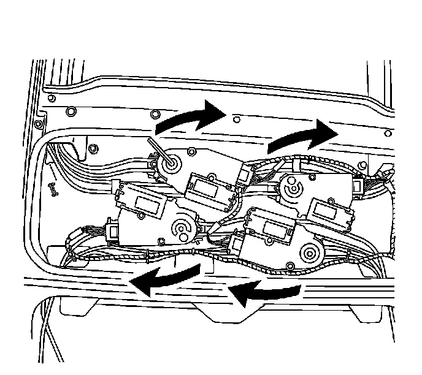

Procedures
Sunroof Manual Operation
The sunroof motors and sunroof sunshade motors may be operated manually.

1. If the front window is partially open, remove the front window. Refer to Sunroof Window Replacement (Front) (Service and Repair)Sunroof Window Replacement (Rear Vent) (Service and Repair)Sunroof Window Replacement (Center) (Service and Repair)Sunroof Window Replacement (Rear Stationary) (Service and Repair) .
2. Remove the center sunroof window. Refer to Sunroof Window Replacement (Front) (Service and Repair)Sunroof Window Replacement (Rear Vent) (Service and Repair)Sunroof Window Replacement (Center) (Service and Repair)Sunroof Window Replacement (Rear Stationary) (Service and Repair) .
Important: The four-motor/actuator assembly is for the ultraview-full sunroof with the rear vent.

Important: The two motor/actuator assembly is for the ultraview-half sunroof without the rear vent.
3. Install a 5/32 in Allen wrench into the hex head gear drive, located on top of the motors.
4. Turn the Allen wrench clockwise to open the sunroof and sunshade. Turn the Allen wrench clockwise to close the sunroof and sunshade.
5. After opening or closing the sunroof for service, remove the Allen wrench.
6. Install the front window, if necessary. Refer to Sunroof Window Replacement (Front) (Service and Repair)Sunroof Window Replacement (Rear Vent) (Service and Repair)Sunroof Window Replacement (Center) (Service and Repair)Sunroof Window Replacement (Rear Stationary) (Service and Repair) .
7. Install the center sunroof window. Refer to Sunroof Window Replacement (Front) (Service and Repair)Sunroof Window Replacement (Rear Vent) (Service and Repair)Sunroof Window Replacement (Center) (Service and Repair)Sunroof Window Replacement (Rear Stationary) (Service and Repair) .
8. Initialize the sunroof and sunshade. Refer to Sunroof Rear Window Initialization Process (Sunroof Rear Window Initialization Process) or to Sunroof Front Window/Sunshade Initialization Process (Sunroof Front Window/Sunshade Initialization Process) .